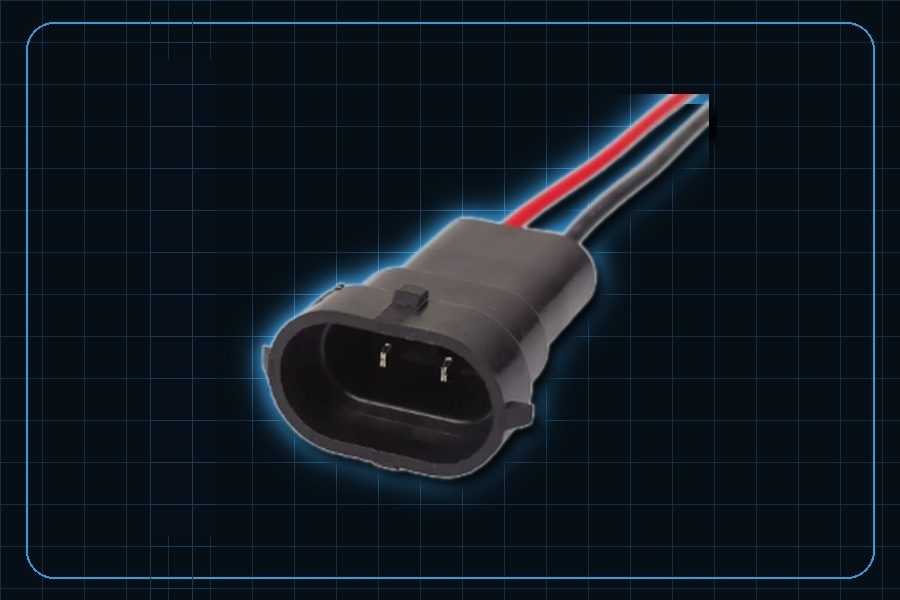

01
ПРОВЕРКА РАЗЪЁМА
Проверьте штатную фишку
Перед установкой убедитесь, что штатная ПТФ подключается двухконтактным разъёмом H11 / H8 / H9. Отключите штатную фишку от старой противотуманной фары и проверьте состояние контактов.
2 КОНТАКТА
H11 / H8 / H9
ШТАТНЫЙ РАЗЪЁМ
БЕЗ РЕЗКИ
